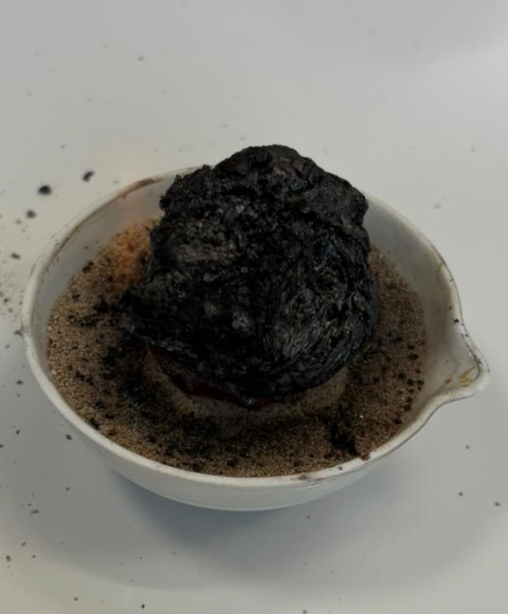
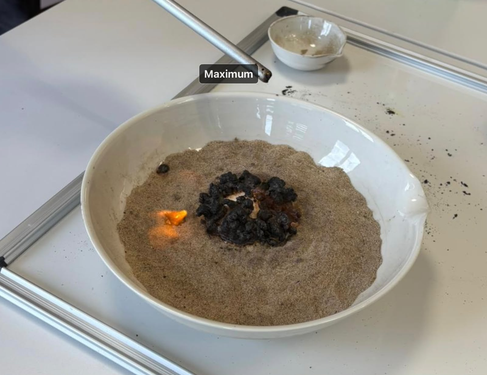
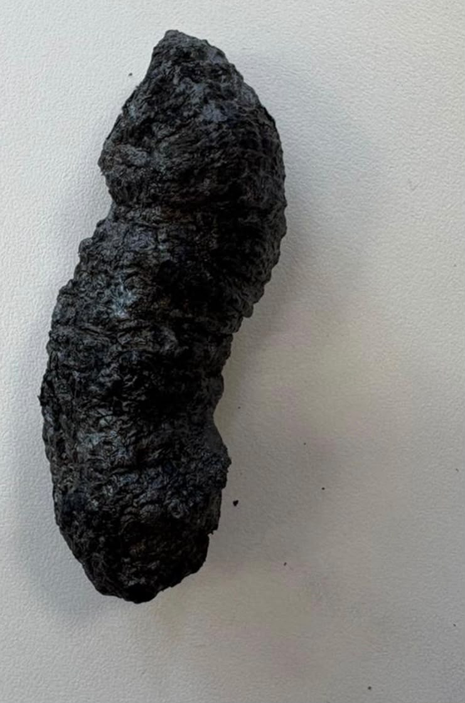

- Porzellanschale
- Sand
- Feuerzeug
Experiment: Pharaoschlange
Materialien
Chemikalien
- Zucker
- Backpulver
- Brennspiritus

Spiritus ist leicht brennbar.
Versuch nur unter Aufsicht durchführen, lange Haare zusammenbinden, Schutzbrille tragen.
Durchführung
- Fülle Sand in die Porzellanschale.
- Forme in der Mitte eine Mulde.
- Mische Zucker und Backpulver im Verhältnis 4:1.
- Gib die Mischung in die Mulde.
- Füge Brennspiritus hinzu und entzünde ihn vorsichtig.
Beobachtung
Der Brennspiritus brennt mit einer gelblich-blauen Flamme. Die Mischung wird schwarz und beginnt zu schäumen. Nach kurzer Zeit wächst eine dunkle Masse aus der Schale. Sie ist leicht, porös und zerbrechlich.

CC BY-SA 4.0" data-source="Eigenes Bild" data-author="Bugrahan, Yannik O." data-title="Pharaoschlange">
CC BY-SA 4.0" data-source="Eigenes Bild" data-author="Bugrahan, Yannik O." data-title="Pharaoschlange">
CC BY-SA 4.0" data-source="Eigenes Bild" data-author="Bugrahan, Yannik O." data-title="Pharaoschlange">Erklärung
Durch die Hitze wird der Zucker teilweise zersetzt und verkohlt. Dabei entsteht eine schwarze, kohlenstoffreiche Masse.
Das Backpulver setzt Kohlenstoffdioxid und Wasserdampf frei. Diese Gase blähen die Masse auf. So entsteht die schlangenähnliche Form.